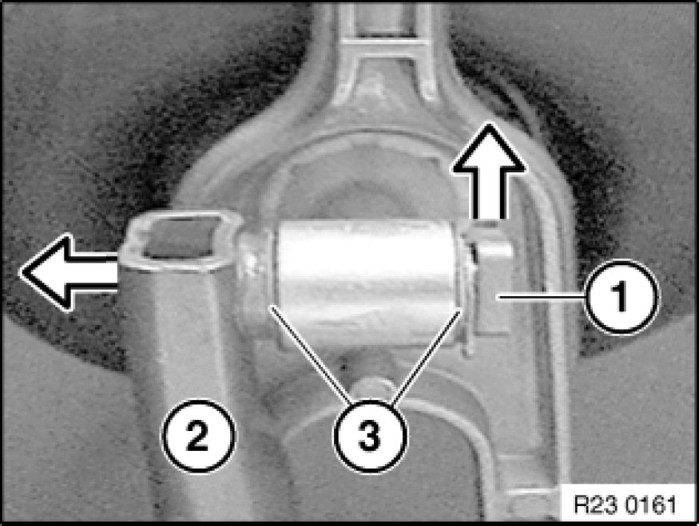

Removing and Installing Transmission (GS6-37BZ N52K)
23 00 019 - Removing and installing transmission (GS6-37BZ N52K)

Special tools required:
- 00 2 030 00 2 030 Universal Hydro-Lifter Basic Unit
- 00 9 010 00 9 010 Torx E18 Socket
- 00 9 120 00 9 120 Torque Angle Measuring Dial
- 00 9 130 00 9 130 Magnet with 1/2 " Connection
- 21 2 220 21 2 220 Grease Scraper Ring
- 23 4 050 23 4 050 Universal Transmission Bracket

Important!
After completion of work, check gear oil level Procedures.
Use only the approved gear oil.
Failure to comply with this requirement will result in serious damage to the manual transmission.
Important!
Aluminium-magnesium materials.
No steel screws/bolts may be used due to the threat of electrochemical corrosion.
A magnesium crankcase requires aluminium screws/bolts exclusively.
Aluminium screws/bolts must be replaced each time they are released.
Aluminium screws/bolts are permitted with and without color coding (blue).
For reliable identification:
Aluminium screws/bolts are not magnetic.
Jointing torque and angle of rotation must be observed without fail (risk of damage).

Necessary preliminary tasks:
- Clamp off battery
- Remove underbody protection with bracket at front and rear.
- Remove reinforcement plate
- Remove complete exhaust system Service and Repair
- Remove heat shields
- Remove front propeller shaft at transfer box and tie to one side
- Support engine with lifter when removing transmission

- Remove propeller shaft from transmission.
- Release center bearing.
- Tie propeller shaft to one side.
Tasks are described in Removing propeller shaft Removing and Installing Propeller Shaft (Cardan Universal Joint) Completely.

Detach plugs (1) and (2) from servomotor.

Detach plug (1) from reversing light switch.
Release cable from mountings and tie to one side.
Note:
Pressure line of clutch slave cylinder remains connected.
Important!
Relieve tension on clutch slave cylinder slowly; otherwise air will be drawn in through sealing sleeve.
Release nuts and remove clutch slave cylinder.
Tightening torque 21 52 5AZ [1][2]Clutch Hydraulic System.

Installation Note:
Release aluminium screw on right next to cable retaining plate with special tool 00 9 010 00 9 010 Torx E18 Socket.
Installation Note:
Aluminium screws must be replaced.
Tightening torque 23 00 2AZ Transmission in General.

Supporting transmission:
Support transmission with special tools 23 4 050 23 4 050 Universal Transmission Bracket, 00 2 030 00 2 030 Universal Hydro-Lifter Basic Unit.
Secure transmission to mounting with tensioning strap (1).
Tasks are described in Transmission bracket Universal BMW Transmission Take-Up.
After completion of work, check transmission oil level.

Unfasten screws and remove transmission cross-member.
Tightening torque 22 32 4AZ/5AZ 22 32 Transmission Mounts.
Unlock bearing pin (1) in direction of arrow and remove.
Lift out shift arm.
Installation Note:
Grease bearing pins (1).
Grease, refer to BMW Service Operating Fluids.

Lift off retainer (1).
Disconnect shift rod (2).
Installation Note:
Grease shift rod.
Grease, refer to BMW Service Operating Fluids.
Make sure shims (3) are in correct position.

Release screws.
Installation Note:
Observe screw fastening sequence without fail.
Tightening torque, steel screws 23 00 1AZ Transmission in General.
Aluminium screws/bolts must be replaced.
Tightening torque and angle of rotation
Aluminium screws/bolts 23 00 2AZ Transmission in General.
Important!
Do not allow transmission to hang from the transmission input shaft when removing and installing, as the clutch disk will be deformed. Pull transmission downwards and remove.

Installation Note:
Secure angle of rotation special tool 00 9 120 00 9 120 Torque Angle Measuring Dial with magnet 00 9 130 00 9 130 Magnet with 1/2 " Connection to floor plate.
Screw down aluminium screws according to angle of rotation.
Angle of rotation 23 00 2AZ Transmission in General.

Installation Note:
Check that dowel sleeves are correctly seated.
Replace damaged dowel sleeves.
Ensure correct position of cover plate.
Installation Note:
Check lubrication of transmission input shaft for sticky consistency. If grease is sticky, clean input shaft and replace clutch plate Service and Repair.
Check clutch plate for friction rust in splines and replace Service and Repair if necessary.
Mechanically remove existing grease and lining abrasion from splines of clutch plate (with a cloth).
Installation Note:
Greasing specification:
- Remove and clean release bearing and release lever Service and Repair.
- Push on grease scraper ring 21 2 220 21 2 220 Grease Scraper Ring as far as it will go.
- Grease splines (1) of input shaft with a brush. Refer to BMW Service Operating Fluids [1][2]Clutch Hydraulic System.
- Detach grease scraper ring.